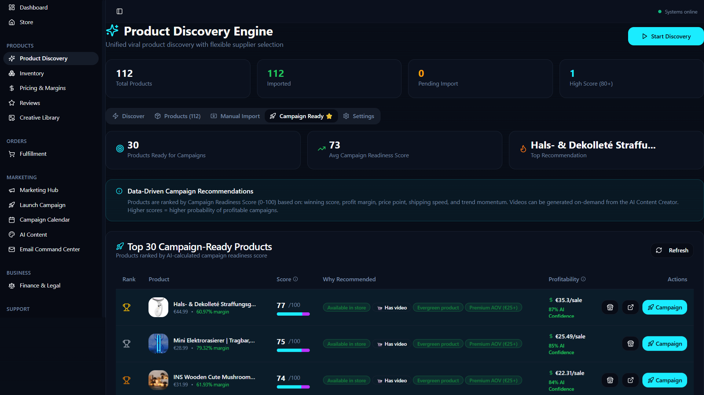
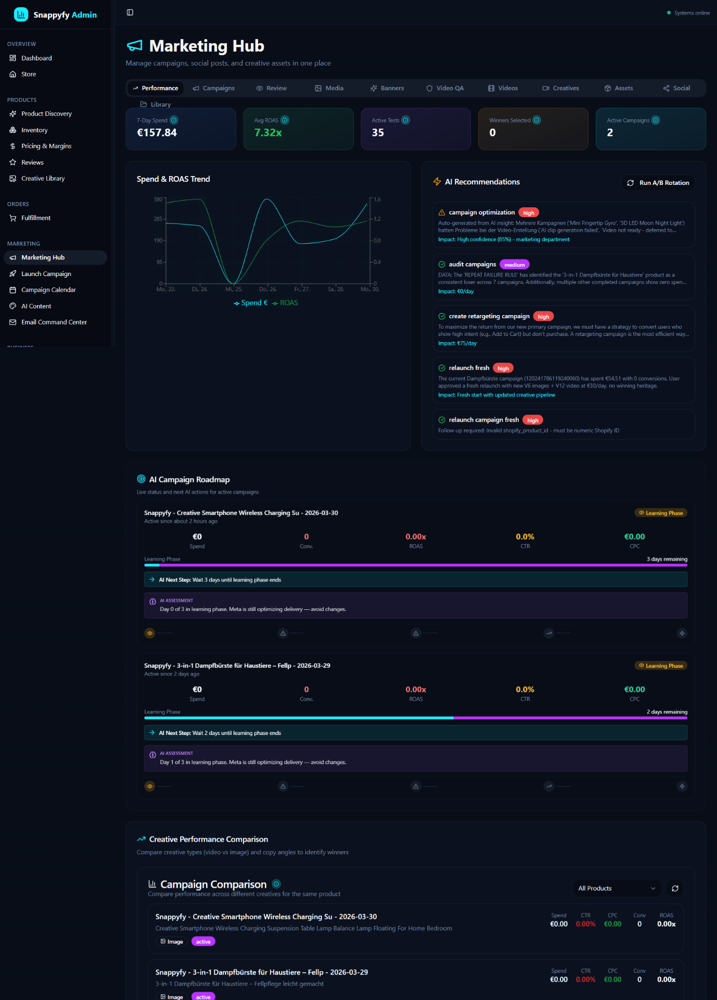
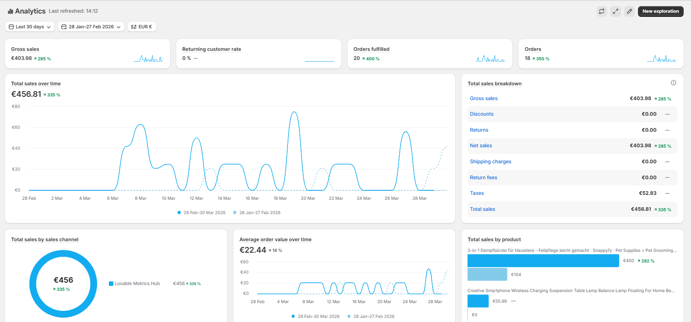
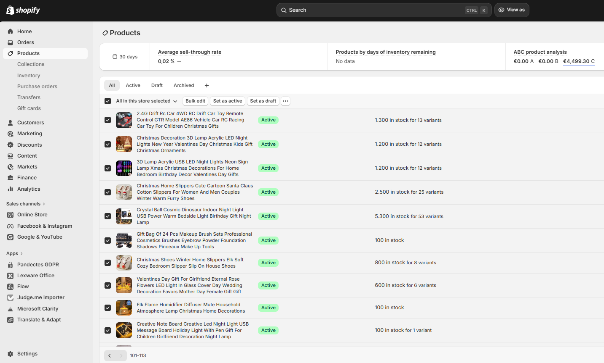

Frontend & Storefront
React/TypeScript interface built with Lovable, connected to Shopify storefront and checkout.


 UX
UXSnappyfy started with a practical constraint: I was running an e-commerce experiment alone. I wanted to replace repetitive manual work with connected product research, AI-assisted decisions, supplier workflows, campaigns, customer support and reporting.

This wasn't a custom storefront for its own sake. As a solo operator, I needed to describe changes, review them and test outcomes without manually juggling every platform. I used ChatGPT to structure requirements and implementation prompts, Lovable to iterate the React/TypeScript frontend, Shopify for commerce and Supabase functions for integrated backoffice processes.
With no direct ChatGPT–Lovable connector at the time, I transferred scoped briefs between them and validated the results. That experience strengthened my skills in product ownership, system mapping, QA and working with AI-assisted development.
My contribution: I led priorities, requirements, integrations, testing and operational decisions. I don't claim to have personally hand-coded the entire application, nor that every designed automation ran fully autonomously in production.
The architecture below summarizes preserved source code and historical interfaces. External API access and workflows are not represented as currently active.
Meta Ads Library research, competitor signals, Firecrawl scraping, marketplace sources and CJ supplier matching.
Evidence + supplier dataProduct scoring, margins, delivery filters, AI task queue, exception flags and operator approval gates.
Scores + human reviewReact storefront, Shopify checkout and orders, CJ fulfillment, marketing creative workflows and support tools.
APIs + process controlGA4, Meta reporting, Shopify order data, Microsoft Clarity, Lexware expenses and QA logs.
Learning + reconciliationThese figures come from preserved project documentation, not from a current live dashboard. Historical sales records have not been independently audited.
The original case-study model had six layers. This updated map combines that model with the preserved React/TypeScript code and documented tools — without implying that every integration was fully automated in production or is currently active.
React/TypeScript interface built with Lovable, connected to Shopify storefront and checkout.
UXShopify orders, Supabase/Deno functions, CJ supplier processes, Sendcloud tracking and returns.
 DenoCJSendcloud
DenoCJSendcloudCampaign planning with Meta Ads, creative workflows with Creatomate and email flows via Resend.
 Creatomate
CreatomateProduct research, handoffs, QA checks, exception handling and human approval gates connected the individual modules. Arrows describe process intent, not guaranteed always-on automation.
Firecrawl-assisted research, supplier and competitor signals, product scoring and assisted recommendations.
FirecrawlAI workflowsGA4, Microsoft Clarity, Meta reporting, Shopify order signals and manual QA reconciliation.
 Clarity
ClarityLovable / low-code implementation, database workflows and bookkeeping context in Lexware Office.
Lexware OfficeSource-grounded historical representation: original case-study PDF, archived system page and preserved implementation. Some modules may be designs or integrated surfaces rather than independently verified production automations. No active store or profitability is implied.
LovableReact / TypeScriptShopify / Storefront APISupabase / DenoCJ DropshippingSendcloudMeta AdsCreatomateResendAI / ChatGPTGoogle Analytics 4Microsoft ClarityLexware OfficeShopify reportingQA & approval checkpointsMy backoffice brought multiple disciplines into one operating environment. These are implemented modules and workflows visible in the historical repository, not a promise that the old external integrations remain connected.
Research across supplier and marketplace signals, product scoring, German-market prioritization, pricing and delivery checks, and shortlist queues.
FIND → VERIFY → PRIORITIZEScheduled jobs, department views, prioritized tasks, AI-assisted operational chat, execution logs and different levels of review for consequential actions.
REASON → PROPOSE → APPROVEMeta Ads campaign workflows, creative generation and routing, Creatomate video and banner modules, campaign readiness, A/B tests and Resend-powered email campaign workflows.
CREATE → REVIEW → DEPLOYShopify webhooks with signature checking and deduplication, CJ variant mapping, supplier cost synchronization, order routing and shipment tracking.
ORDER → FULFILL → TRACKAI-assisted customer chat, ticket creation and escalation, return-status workflows, Sendcloud labels and manual review of refunds and supplier exceptions.
ASSIST → ESCALATE → RESOLVEReporting views from Shopify, Meta and GA4, Microsoft Clarity UX analysis, Lexware integrations, cost management and issue monitoring.
MEASURE → RECONCILE → IMPROVEResend was integrated into promotional and seasonal email workflows and transactional messages. The archived application includes an Email Campaign Center with calendar, analytics, automation status, retention funnel and send logs.
The source also contains a Resend webhook handler for delivery, open, click and bounce events. This documents implementation, not a claim about live deliverability or campaign ROI.
Original historical screenshots from the project's source assets. They illustrate interfaces, not an active interactive demo. Some old counters reflect estimates or non-reconciled sources and should not be interpreted as audited results.




These interfaces capture product research, campaign preparation, operational control and Shopify administration. The archive remains read-only.
Browse preserved storefront ↗View historical product ↗Preserved code references Gemini 2.5 Flash for AI-assisted operations. Creative routing also contains video-model configuration entries. A configuration entry is not evidence that a model was used in production; the documented work is workflow design, integration testing and review.
The important work began when data was missing, duplicated or inconsistent.
A substantial connected application was built and tested, with real customer orders and practical learning from integrating disparate systems and managing QA as one person.
The store ultimately closed. Operating costs and complexity expanded before the offer, acquisition and contribution-margin model had been adequately proven. Some dashboard figures lacked reliable reconciliation.
Validate the smallest profitable workflow, keep one source of transaction truth, distinguish evidence from assumptions, and reserve automation for the processes where it creates measurable value.
The original case-study page is a historical artifact, and its old counters may include incomplete or fallback data. Live administrative routes are deliberately protected; this page is a safe public overview, not an admin login.